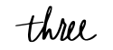
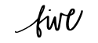

Your online cheese guide
A mobile app that helps users find the perfect cheese plate for any occasion.
Why?
Working as a cheesemonger for many years, one of the questions I always received was, “I want to create a cheese plate, what should I put on it?” After hearing this question hundreds of times, I realized how an application like this would be beneficial for people. The app would be great for people who love to entertain, great for people who want to share a delicious cheese plate but have no idea how to do it. I wanted to create something simple, quick, and fun to use, all while creating an experience that’s not intimidating or pretentious (as cheese tends to be at times). Why be a cheesemonger for a single store when you can do it for an entire online community.

Researching phase
First things first, I needed to find out if people actually wanted a mobile app like this. I created a survey to see if anyone would actually be interested. After receiving early positive signals, I created another survey with questions that were geared towards understanding what cheese enthusiasts, cheese club members, and people who love to entertain would want and need in an app.


Creating the user flow


From sketches to wireframes



Mockups + prototype
From the beginning, I knew I wanted Cheese Block to be fun and colorful. Minimal design, shapes, and color would define this app, similar to that of a cheese store. Questions needed to keep users engaged; I needed to make sure that they finished the quiz without feeling bored. Icons and illustrations gave it a playful vibe. Abstract shapes inspired from different types of cheeses were added. The red circle represented gouda, the yellow triangle a wedge of cheese, and the teal block was modeled after a cheese block, hence the name. The results page is a clean, simple design for users to quickly retrieve their cheese suggestions. The app gives them exactly what cheese to buy at their local cheese shop, and if they can’t find that particular cheese, they can skip and choose the next best thing.
cheese block prototype video

Conclusion
Cheese Block has been a journey. I’ve gone through multiple designs, prototypes, mockups, and testing rounds. I wanted to make sure my years of experience as a cheesemonger didn’t go in vain; that I could help people by sharing my years of knowledge. There were so many moving parts I needed to figure out: the result page, the questions, the sign-up page, the feel of the app. What did I want my branding to be? How should it flow? In order to have a successful mobile app, you must test, test, test. And after creating wireframes, sketches, and mockups, you must test again. Ask your friends, potentials users, classmates, parents, strangers, get all the feedback possible. And after that, did I mention you have to test again? Alignment, hierarchy, and typography are all important components when it comes to mobile apps; I had to adhere to the Apple Human Interface Guidelines.
Overall, I loved creating something that I truly believed in. I’ve always wanted to build an app like this and I am so glad I went for it and kept creating even when there was no end in sight. I know it’s not far from being completed, but when is an app ever completed? As long as I keep learning and building, Cheese Block will be on it’s way to being an amazing mobile application!